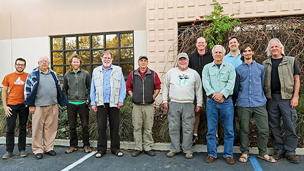

Current CBRC Membership

As of the January 2015 Election

Members through 2015
Members through 2016
Members through 2017
Recent Members through 2014

Back row, left to right: Tom Benson, Steve Rottenborn
Front row: Adam Searcy, Guy McCaskie, Jim Tietz, Joseph Morlan, Peter Pyle, Jon L. Dunn, Dan Singer, John
Garrett, Brian Daniels
Note: This is the 2014 committee.
Dunn, Pyle and Rottenborn have rotated off the committee.
Harter, Nelson and Terrill are not pictured.
Photo at Camarillo, California © January 2015